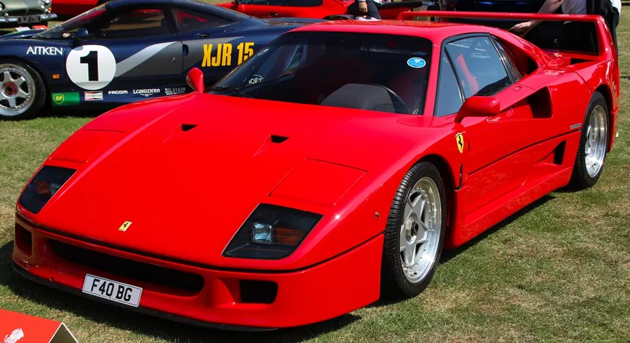

형태를 읽는 시간.
브랜드와 시대, 자동차의 형태를 따라 읽는 TOHEŞAR의 디자인 기록.
3편의 이야기

1987 / FERRARI · DESIGN HISTORY속도가 형태를 만들 때
F40 · 공기의 통로와 1980년대의 조형 ↗
사진: MrWalkr · CC BY-SA 4.0 1973 / PORSCHE · DESIGN HISTORY
1973 / PORSCHE · DESIGN HISTORY시간이 남긴 실루엣
911 Carrera RSR · 지붕선과 레이싱의 흔적 ↗
사진: Calreyn88 · CC0 1.0PORSCHE / VISION MODELMISSION S.TYPOGRAPHIC STUDY
2026 / PORSCHE · DESIGN다음 시대에도, 포르쉐는 포르쉐일까
Mission S · 비전 모델과 양산차의 거리 ↗
조건에 맞는 이야기가 없습니다. 검색어나 주제를 바꿔보세요.
현재 자동차 디자인·역사 3편을 제공합니다. 더 많은 주제는 새로운 이야기가 발행되면 추가됩니다.
최신 자동차 뉴스 찾아보기 ↗